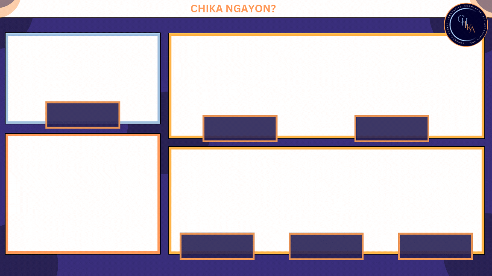

The main stream overlay is composed of the colors from our Logo along with the fonts that were chosen previously.
The overlay has four boxes, the one on the top left and the two others on the right are the ones used for the cameras, while the one on the bottom left is meant for the chat.
The "Chika Ngayon," text represents the current topic being talked about. And the boxes on the camera boxes are where the names of the members and hosts will be placed along with their socials if wanted.